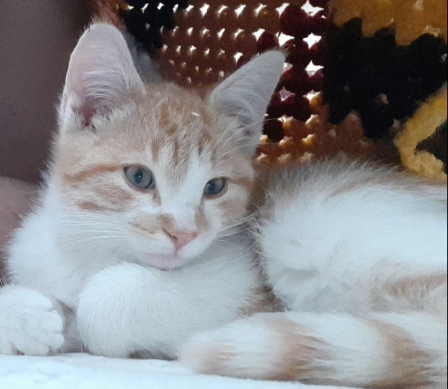

Jensen's life began in an alley in the rough and tumble backstreets of Thunder Bay. His childhood was difficult to say the least. He lived with and regularly fought other feral kittens until the day he was scooped up and broughtto Caring Hearts Cat Rescue. Though his independence had been taken from him, his new situation saw him being fed and pampered. It wasn't long until an unwitting man name Daniel Gareau found him there and took him home. Little did this poor, sweet, and extremely handsome man know that Jensen vowed on that day to protest his loss of independence everyday with mischeivous acts such as eating every shoe lace in the house and 3am sprints ending with dive bombs into his sleeping owner's chest.
Possible early sighting of Jensenius monstarus
Jensen's long lost ancestors
